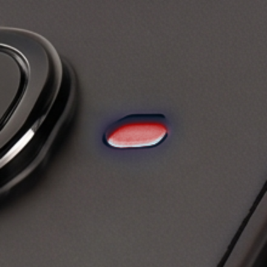
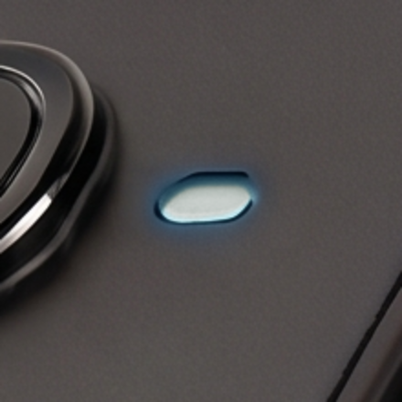
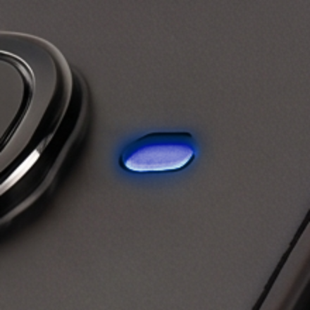
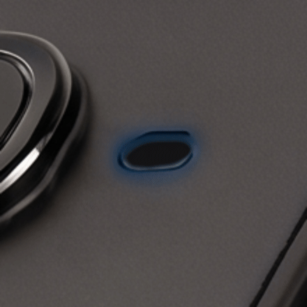
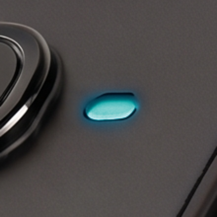
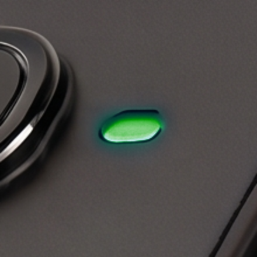
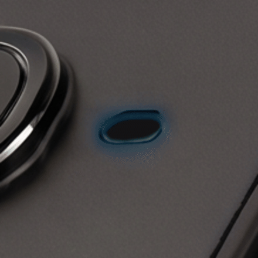
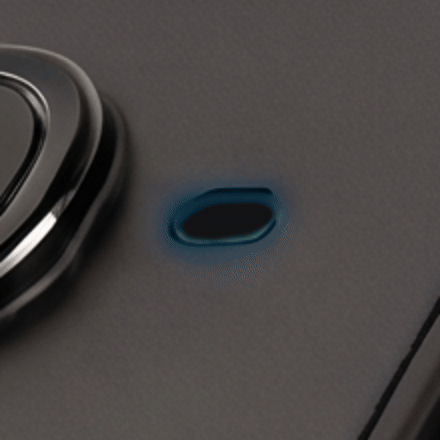

Supported devices¶
The SDK supports two hardware models, both exposed as a shared
MudraDevice API with a small set of model-specific extras:
Mudra Pro (
MudraPro) — 3-channel EMG (ADS1293 AFE).Mudra Ultimate (
MudraUltimate) — 8-channel EMG (ADS1298 AFE).
Every method common to both — connect/disconnect, sensor enable/disable,
status, config, licensing, recording — is defined once on the shared
MudraDevice base (mudra_sdk/models/mudra_device.py) and works identically
on either model. MudraPro/MudraUltimate (mudra_sdk/models/mudra_pro.py,
mudra_sdk/models/mudra_ultimate.py) only add what differs.
Model detection¶
You never construct MudraPro/MudraUltimate directly — the SDK detects
the model automatically (from the BLE advertised name, or the CDC device
identity) both when a device is found via scan_ble()/scan_cdc() and via
get_connected_devices(), and hands you back the right subclass. Check
device.MODEL (a MudraModel.PRO/MudraModel.ULTIMATE value) if your code
needs to branch on it — most callers don’t, since the shared API covers
everything but the extras below.
What differs¶
Mudra Pro |
Mudra Ultimate |
|
|---|---|---|
EMG channels |
3 ( |
8 ( |
EMG AFE |
ADS1293 |
ADS1298 |
EMG ODR enum |
|
|
Packet-loss test mode |
|
Not present — Ultimate has no equivalent |
EMG bench self-test |
Not present |
|
Host clock-sync / link stats |
Not present |
|
device.EMG_ODR_ENUM always points at the right enum for whichever model
device actually is, so generic code can do
device.set_emg_odr(device.EMG_ODR_ENUM.<value>) without an isinstance
check.
Transports¶
Both models connect over either transport, unified behind the same API (see CONNECTION.md):
BLE — advertised name containing
"Mudra Pro"(both models share this advertising prefix; the model is disambiguated from other fields in the advertisement/GATT data, not the name alone).USB-CDC — USB VID/PID
0x2FE3/0x0001, two serial ports (CONFIG+DATA), disambiguated with aCDC?handshake.
Status LED¶
Both models drive a single RGB status LED through a priority-based state
machine (src/logic_layer/led_manager/ in each firmware repo). Several
states can be active at once; the highest-priority active state owns the
LED. This SDK doesn’t wrap it in a typed method — see
“Controlling it” below — so the table
here is sourced directly from the firmware (mudra_pro/mudra_ultimate
repos, led_manager.h/.c, branch main), not from this SDK’s own code.
Brightness is capped at 10% of the PWM duty cycle; RGB below is (R, G, B),
each 0–100 as a percentage of that cap — (0, 100, 0) is full-intensity
green at the 10% ceiling, not the LED’s absolute maximum.
Mudra Pro¶
Listed highest priority first:
State |
ID |
Priority |
Color (R,G,B) |
Animation |
Shown when |
|---|---|---|---|---|---|
|
9 |
255 |
(100, 0, 0) red |
constant |
a fault is signalled |
|
10 |
80 |
(100, 0, 100) purple |
pulse |
a firmware update (MCUmgr/SMP) is uploading — see CONNECTION.md §6 |
|
1 |
75 |
(50, 100, 85) white |
one-shot fade |
boot (runs to completion before lower states) |
|
8 |
70 |
(0, 10, 100) blue+green |
constant |
charger attached, charge complete |
|
7 |
60 |
(0, 10, 100) blue+green |
pulse |
charging |
|
6 |
50 |
(0, 100, 100) teal |
constant |
a sensor is streaming data |
|
5 |
40 |
(0, 100, 0) green |
constant |
a sensor is on but not streaming |
|
4 |
30 |
(100, 100, 0) yellow |
pulse |
BLE advertising (not connected) |
|
3 |
15 |
(0, 100, 0) green |
pulse |
idle / connected, nothing active |
|
2 |
10 |
caller-set |
const / pulse / blink / one-shot |
app drives it (see below) |
Mudra Ultimate¶
Same state machine and priorities, except: no DFU_ACTIVE (this
firmware has no DFU/MCUmgr LED hook), and what Mudra Pro calls a single
ERROR state is split into two:
State |
ID |
Priority |
Color (R,G,B) |
Animation |
Shown when |
|---|---|---|---|---|---|
|
9 |
72 |
(100, 0, 0) red |
constant |
charger attached but refusing to charge |
|
10 |
55 |
(100, 0, 0) red |
pulse |
battery SOC ≤ 15% (clears at ≥ 20%, hysteresis) |
CHARGE_FAULT outranks BATTERY_FULL (70) so a refused charge can’t read
as a finished one, but stays below STARTUP (75). BATTERY_LOW outranks
STREAMING (50) so a capture that’s about to be cut short says so, but sits
below CHARGING/BATTERY_FULL (60/70) — a charger being attached takes
precedence over the low-battery warning, by construction of the priority
table rather than a special case at every call site. Every other state
(STARTUP 75, BATTERY_FULL 70, CHARGING 60, STREAMING 50,
SENSOR_ON 40, ADVERTISING 30, IDLE 15, CUSTOM 10) is identical to
Mudra Pro’s table above, including IDs.
Two pairs share a color on both models and differ only by animation +
priority: CHARGING vs BATTERY_FULL (blue+green; pulse vs. constant)
and IDLE vs SENSOR_ON (green; pulse vs. constant) — Mudra Ultimate
adds a third, CHARGE_FAULT vs BATTERY_LOW (red; constant vs. pulse).
Controlling it (raw commands only)¶
This SDK exposes the LED only as raw, untyped commands — there’s no
MudraDevice.set_led(...)/get_led_state() method. Send these via
send_command()/send_cdc_command()
(CONNECTION.md §4) using the
matching ProFirmwareCommand/UltimateFirmwareCommand member (BT_CMD_LED
/ 0x60 on the wire):
Command |
CDC token |
Payload |
Notes |
|---|---|---|---|
|
|
1 byte: |
|
|
|
1 byte: |
Clears that state’s vote; another active state (or none) then shows |
|
|
|
Sets |
|
|
|
Same stash/restore behavior as |
|
|
(none) |
Clears |
|
|
(none) |
Replies with 1 byte: the currently displayed (highest-priority active) |
What it looks like¶
Close-ups of the status LED in the states shared by both models — the
renders are zoomed to the LED recess; the rest of the band is cropped away.
Pulsing states animate. (DFU_ACTIVE, CHARGE_FAULT, and BATTERY_LOW
have no photographed render yet; CUSTOM has no fixed look, so it isn’t
shown either.)








The swatch dots are indicative; the precise per-channel values are in the tables above.
If you need the specific state_id/anim value meanings (e.g. an
“advertising” or “charging” state), they live in this device’s firmware
source, outside this repo — nothing here documents them. Treat the table
above as the full extent of what’s verified: the command surface exists,
its semantics don’t ship with this SDK.
License tiers¶
Every device enforces a capability tier — FREE, PLUS, PRO
(LicenseTier in mudra_sdk.models.enums) — via a signed token, independent
of hardware model:
Higher tiers unlock faster ODRs, wider EMG resolution, and extra ranges.
SD-card recording (SENSORS.md §5) requires
PROspecifically — starting a recording onFREE/PLUSis rejected withBtCmdStatus.ERR_LICENSE.
See AUTH.md for how a tier gets onto a device in the first place —
connecting never requires an account, but reaching anything above FREE
usually does.
Platform support (host side)¶
The native MudraSDK library ships prebuilt for:
Platform |
Architectures |
|---|---|
Windows |
x64, x86 |
macOS |
arm64, x86_64 |
Linux |
x86_64, aarch64 |
See native_library.md for how these are built and what happens if one is missing for your platform.